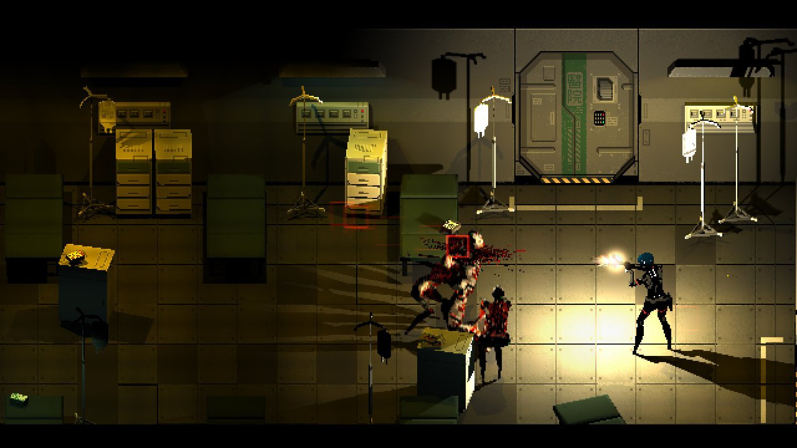
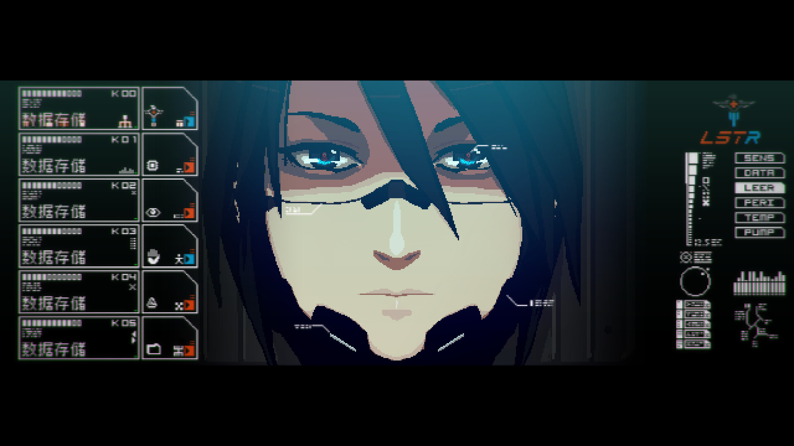
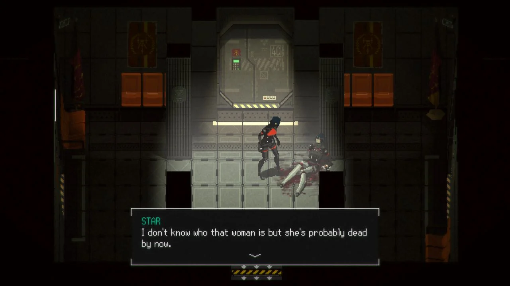
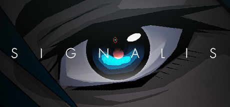

Em um futuro distópico onde a humanidade colonizou o sistema solar sob o regime totalitário de Eusan, a técnica Replika Elster desperta em uma nave despenhada para encontrar um mundo de pesadelos surrealistas. Signalis é uma carta de amor ao horror de sobrevivência clássico, combinando uma estética retro-tech industrial com mistérios cósmicos e psicológicos. Explore uma instalação de mineração abandonada, resolva quebra-cabeças complexos que exigem lógica e observação, e gerencie seu inventário limitado enquanto foge de criaturas corrompidas. Cada documento encontrado e cada frequência de rádio sintonizada revelam uma história melancólica sobre promessas quebradas e memórias que se recusam a morrer.